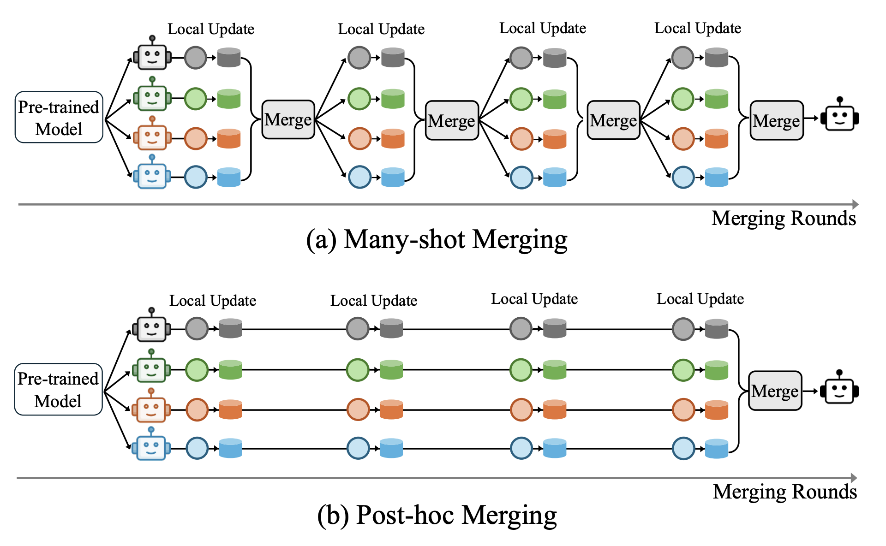
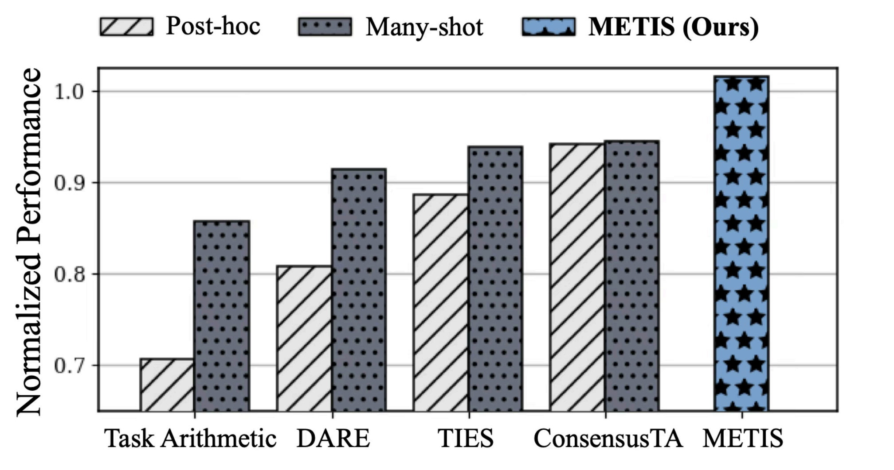
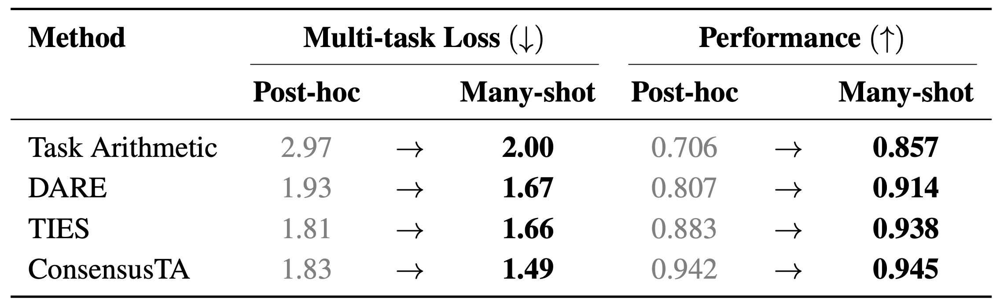
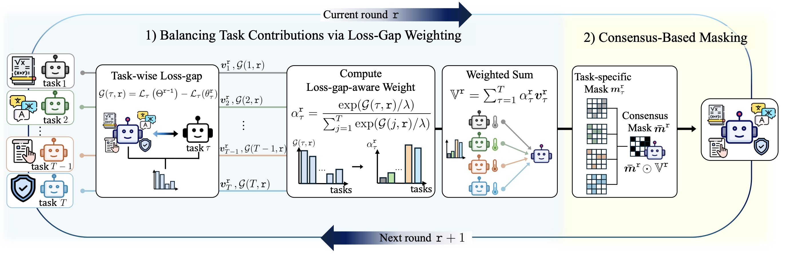
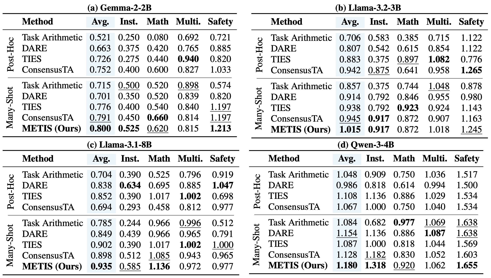
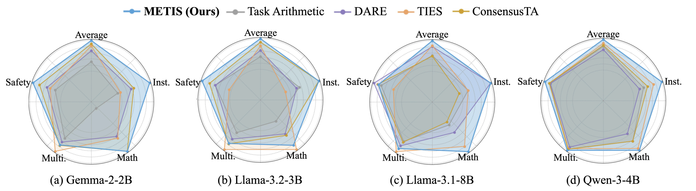
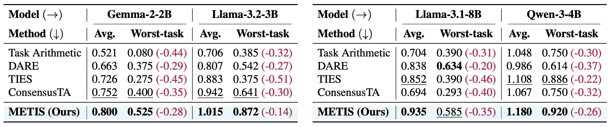
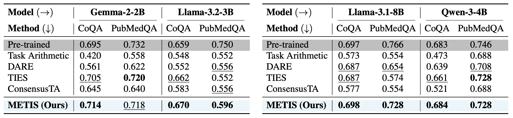
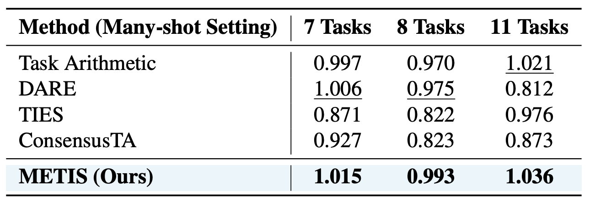
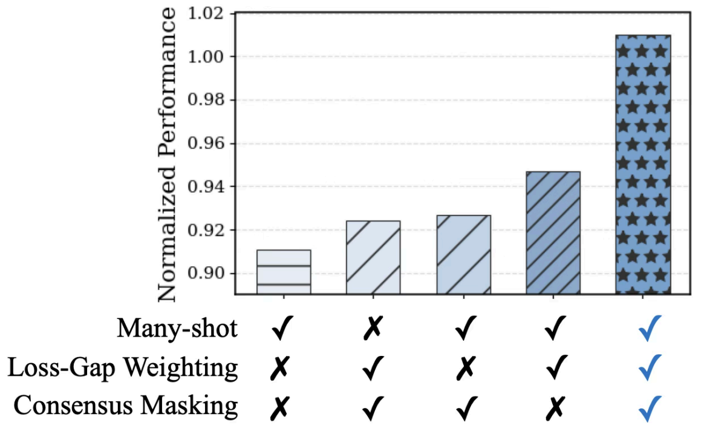

Abstract
Model merging has become a practical post-training strategy for building a single multi-task large language model (LLM) by combining multiple task-specialized models, avoiding costly joint training. However, most existing approaches rely on post-hoc one-shot merging, in which task-specific models are merged only once after training. This one-shot aggregation often suffers from task interference, leading to information erasure across individual tasks. In this work, we show that replacing post-hoc merging with an iterative many-shot merging protocol is effective in improving multi-task performance. This improvement arises from gradually integrating task-specific models and reducing abrupt parameter shifts. Building on this insight, we propose METIS, Mitigating Erasure from Task Interference for Stable many-shot merging. METIS is a loss-aware many-shot merging method that stabilizes iterative integration through task-wise loss-gap weighting and consensus-based masking. Through extensive empirical evaluation, we demonstrate that the proposed method outperforms baseline merging approaches. Notably, METIS exhibits significant performance improvement on the worst-performing task, effectively mitigating information erasure.
Why Many-Shot Merging?
Most existing model merging methods rely on post-hoc one-shot merging, where task-specific models are merged only once after post-training. While simple and efficient, this one-shot aggregation often suffers from task interference, leading to information erasure across tasks. Many-shot merging addresses this limitation by iteratively integrating task-specific models over multiple merging rounds. Instead of introducing cross-task interactions all at once, many-shot merging gradually integrates heterogeneous task updates, reducing abrupt parameter shifts and destructive interference.

Figure 1. Overview of the many-shot merging framework. (a) Many-shot merging alternates local updates and merging across rounds. (b) Post-hoc merging performs a single integration after all local updates.

Figure 2. Performance comparison of many-shot and post-hoc merging across representative methods using Llama-3.2-3B.
As illustrated in Figure 1, post-hoc merging aggregates fully trained task models in a single step, whereas many-shot merging repeatedly alternates between local updates and merging. This iterative integration better aligns with the optimization process and constrains task drift within a shared parameter neighborhood. Figure 2 provides empirical evidence. Across representative merging methods—including Task Arithmetic, DARE, TIES, and ConsensusTA—simply transitioning from post-hoc to many-shot merging consistently improves multi-task performance on Llama-3.2-3B. These results highlight a key insight: Iterative integration itself is a crucial factor for mitigating information erasure in model merging. Building on this observation, we propose METIS, which further stabilizes many-shot merging through loss-gap–aware task weighting and consensus-based masking, achieving stronger and more balanced multi-task capability.
The improvement of many-shot merging over post-hoc merging is also supported theoretically (Theorem 3.2) and verified empirically. Across all representative methods, transitioning to many-shot merging consistently reduces multi-task loss and improves normalized performance.

Table 1. Multi-task loss and normalized performance for post-hoc vs. many-shot merging on Llama-3.2-3B.
Method: METIS
We propose METIS (Mitigating Erasure from Task Interference for Stable many-shot merging), a merging method designed to mitigate information erasure under the many-shot merging framework. Rather than naively applying iterative merging, METIS stabilizes the integration process by balancing task contributions and localizing compatible parameter updates across merging rounds.

Figure 3. Overall framework of METIS. At each merging round, task-wise loss gaps are computed to derive loss-gap-aware weights, then consensus-based masking filters conflicting parameter updates.
1. Balancing Task Contributions via Loss-Gap Weighting
In many-shot merging, information erasure incurred for a specific task in one merging round can be compensated in subsequent rounds. Motivated by this observation, METIS introduces task-wise loss-gap–aware weighting to dynamically rebalance task contributions during iterative aggregation. At each merging round, the task-wise loss gap measures how much worse the current merged model fits a task compared to its locally adapted counterpart. Tasks with larger loss gaps indicate more severely erased task-specific information and are therefore assigned larger merging weights, while well-represented tasks receive smaller weights. By emphasizing underrepresented tasks, loss-gap–aware weighting enables more balanced integration of heterogeneous task updates.
2. Consensus-Based Masking
While loss-gap–aware weighting balances task contributions, parameter-level conflicts may still arise due to heterogeneous task objectives. To further reduce destructive interference, METIS employs consensus-based masking to enhance task localization during merging. Task-specific masks filter out parameter updates dominated by conflicting contributions from other tasks, and a consensus mask retains only updates consistently supported across multiple tasks. This mechanism suppresses task-specific noise while preserving shared and compatible updates, enabling selective integration of parameters that are robust across tasks.
Results
We evaluate METIS against representative post-hoc merging baselines (Task Arithmetic, DARE, TIES, ConsensusTA) and their many-shot variants across four backbone LLMs: Gemma-2-2B, Llama-3.2-3B, Llama-3.1-8B, and Qwen-3-4B. Tasks span four categories: instruction-following (IFEval), mathematical reasoning (GSM8K), multilingual understanding (M-MMLU, M-ARC, M-HellaSwag), and safety (XSTest). We report normalized performance, defined as the ratio of merged model performance to individually fine-tuned model performance.

Table 2. Category-level normalized performance across backbone models on instruction following, mathematical reasoning, multilingual understanding, and safety tasks. The best results are shown in bold, and the second-best results are underlined.

Figure 4. Balanced Robustness: Radar charts comparing task-level performance across multiple backbone LLMs. METIS consistently maintains balanced performance across tasks without severe degradation on any individual category.
By rebalancing task contributions via loss-gap–aware weighting and localizing compatible updates through consensus-based masking, METIS achieves more stable alignment of heterogeneous task objectives under iterative merging. Notably, the proposed method shows significant improvement on the worst-performing task while maintaining strong average performance, demonstrating improved robustness to information erasure.
Robustness Analyses
Worst-Performing Task Robustness
A robust multi-task model should perform well across all tasks, including the most challenging ones. METIS achieves the highest performance on the worst-performing task while also attaining the best average performance, and exhibits the smallest gap between average and worst-task scores among all baselines.

Table 3. Average and worst-performing task results compared with post-hoc merging methods across backbone models. The value in parentheses indicates the drop from the average performance.
Pre-Trained Knowledge Retention
Beyond in-domain tasks, METIS consistently preserves pre-trained knowledge on out-of-domain benchmarks (CoQA, PubMedQA), remaining closest to the original pre-trained model's performance compared to all baselines.

Table 4. Pre-trained knowledge performance on CoQA (exact match) and PubMedQA (accuracy) across backbone models. Gray-shaded rows denote the performance of the corresponding pre-trained backbone without task-specific fine-tuning.
Scalability to Number of Tasks
METIS consistently achieves the highest performance as the number of merged tasks increases (7, 8, and 11 tasks), demonstrating that loss-gap-aware aggregation scales effectively to more challenging multi-task settings.

Table 5. Normalized performance of baseline methods under the many-shot setting on Llama-3.2-3B across 7, 8, and 11 tasks.
Ablation Study
To quantify the contribution of each design choice, we conduct a component-wise ablation study in which individual components are selectively disabled while all other configurations are held fixed. We evaluate the effects of (1) many-shot merging, (2) loss-gap-aware weighting, and (3) consensus-based masking on Llama-3.2-3B. Each component contributes meaningfully to the final performance, and removing any single component consistently degrades results. In particular, removing many-shot merging results in the largest drop, highlighting its central role in mitigating information erasure across merging rounds.

Figure 5. Component-wise ablation analysis of METIS on Llama-3.2-3B. Combining all three components achieves the best performance, demonstrating their complementary roles.
Citation
@inproceedings{im2026posthoc,
title = {Post-Hoc Merging is Not Enough: Many-Shot Model Merging with Loss-Gap Balancing},
author = {Im, Kyungjin and Kim, Miru and Eom, Chanin and Kwon, Minhae},
booktitle = {Proceedings of the 43rd International Conference on Machine Learning},
year = {2026}
}